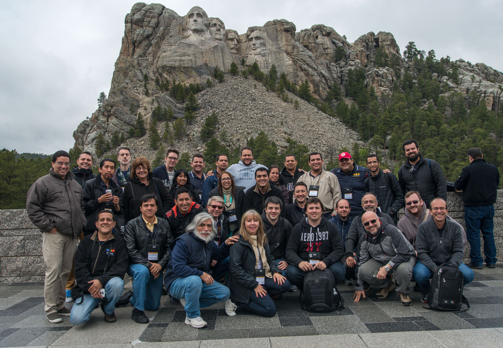
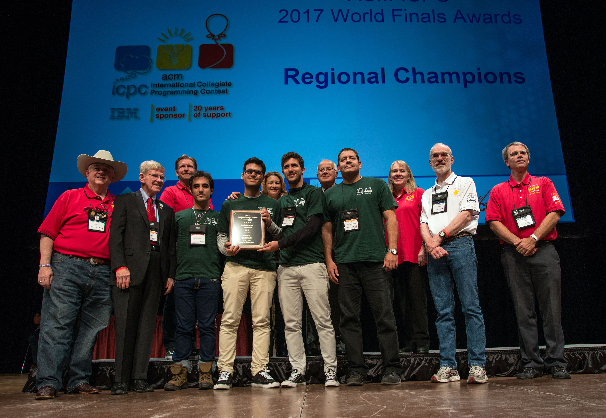

Maratona Edição de 2016

Em 2016, foi realizada a XXI Maratona de Programação, uma competição promovida pela Sociedade Brasileira de Computação. A primeira fase aconteceu em 10 de setembro, contando com a participação de 779 equipes de 231 instituições, distribuídas em 49 sedes por todo o país. Pela primeira vez, todas as sedes participaram de uma correção centralizada, com as submissões sendo avaliadas pela equipe de juízes liderada pelo Prof. Ricardo Anido.
Sobre o evento:
A final brasileira de 2016 ocorreu em Belo Horizonte, MG, organizada pela UFMG, CEFET-MG e PUC-Minas. Os diretores da final foram Vinicius Fernandes dos Santos (UFMG), Douglas G. Macharet (UFMG), Jefersson A. dos Santos (UFMG) e Sandro Renato Dias (CEFET-MG). A primeira fase da Maratona de Programação 2016 contou com 779 times inscritos, representando 231 escolas de todos os estados do Brasil, o que estabeleceu um novo recorde de participação. Além desses times, algumas sedes também receberam equipes "café com leite", totalizando 789 times participantes. Pela primeira vez, todas as sedes participaram da correção centralizada. A equipe de juízes, composta por Ricardo Anido (Unicamp), Bruno Adami (Google), Cláudio L. Lucchesi (UFMS), Guilherme A. Pinto, Luis Fernando D. de Abreu (Google), Paulo Cezar P. Costa (UFG), Vinicius dos Santos (UFMG) e Juan Pablo Marin Rosas (Universidad de Guadalajara), foi responsável por revisar as submissões de todas as sedes. Grande parte da correção foi realizada automaticamente e sem problemas, graças ao empenho dos diretores de sede e suas equipes técnicas, sob a coordenação de Cassio P. de Campos (Queens Univ.) e Bruno C. Ribas (UTFPR).
Fotos e vídeos podem ser encontrados na página do Facebook da Maratona
Sobre os problemas da competição:
A seguir, você poderá acessar os problemas que serviram de Aquecimento e os Problemas da Competição:
Os competidores também tiveram acesso a perguntas direcionadas aos juízes para auxiliar na resolução dos problemas. Cada uma perguntas podem ser visualizadas aqui. Caso você queira treinar para as próximas Maratonas utilizando as Maratonas anteriores, recomendo que tente resolver os problemas já apresentados. Então, deixarei aqui as soluções para cada problema da competição.
Colaboradores:
As pessoas a seguir ajudaram no desenvolvimento do conjunto de problemas criando e aperfeiçoando os enunciados, soluções casos de teste e checadores das entradas e saída: Bruno Junqueira Adami, Brazil; Fidel I. Schaposnik, Argentina; Guilherme Albuquerque Pinto, Brazil; Luis Fernando Dorelli de Abreu, Brazil; Paulo Cezar Pereira Costa, Brazil; Rafael Armando Garcia Gomez, Colombia; e Yonny Mondelo Hernández, Cuba.
Medalhistas:
O time "0xE" da Universidade Federal de Pernambuco foi o campeão da XXI Maratona de Programação 2016, composto por Lucas Almeida Pereira de Lima, Duhan Caraciolo, Mario Henrique da Silva e orientado pelos coaches Katia Guimarães e Gustavo Stor. Esta é a nona vitória de uma equipe da UFPE em 21 edições da competição. Será a décima segunda vez que a UFPE representará o Brasil em uma final mundial do ICPC.
{kind=link}
MEDALHAS DE OURO:
MEDALHAS DE PRATA:
MEDALHAS DE BRONZE:
Para mais detalhes dos resultados da competição, acesse o Placar final da competição. Está disponível também um Gráfico de Estatísticas para maior visualização dos números de erros, linguagens utilizadas, problemas encontrados, etc.
Além da competição em si, também houve um extra após o evento. Um Curso de Treinamento na Unicamp com patrocínio da Google, Microsoft e InMetrics.
O treinamento foi realizado de 23 de janeiro a 4 de fevereiro de 2017, sob a coordenação do Prof. Rodolfo Azevedo, do IC-Unicamp. Ao todo, 133 estudantes participaram, sendo que 24 deles estarão nas finais mundiais da competição em maio de 2017. Os instrutores, renomados na comunidade da Maratona, foram Maxim Akhmedov e Mike Mirzayanov, que organizaram 11 competições e ministraram 10 aulas para os alunos.
O curso se denominou como "Escola de Verão Brasileira ICPC". A Escola de Verão Brasileira ICPC 2017 é organizada pela Sociedade Brasileira de Computação e sediada pela Unicamp durante duas semanas, de 23 de janeiro a 4 de fevereiro. Seu principal objetivo é treinar os Finalistas Mundiais do ICPC. A escola também estaria abrindo vagas extras para estudantes latino-americanos que desejam aprimorar suas habilidades de resolução de problemas para as próximas competições. Esta edição incluiu palestras de segunda a sábado e cada semana teve um dia dedicado aos patrocinadores. O treinamento foi além do presencial ao transmitir ao vivo todas as aulas e permitir que os alunos concorram remotamente.
Final Mundial
Classificaram-se para a Final Mundial em Rapid City, Estados Unidos, de 20 a 25 de maio de 2017 as seguintes universidades brasileiras:
Durante a final mundial ocorreu a reunião dos diretores da competição em todo o mundo. Os diretores da América Latina estão na foto abaixo.
Do Brasil estavam presentes Bruno Ribas (UTFPR), responsável por sistemas computacionais, Carlos E. Ferreira (USP), diretor da regional brasileira, Vinicius Santos (UFMG), problem setter e diretor da final 2016, Ricardo Anido (Unicamp), juiz chefe da América Latina, Cassio Campos (Queens University), responsável por sistemas na América Latina e Ricardo Dahab (Unicamp), diretor da superregião latino-americana. As equipes brasileiras tiveram um bom desempenho. Cinco times resolveram 4 problemas e terminaram na 56a. colocação: UFPE, UFRN, UNIFEI, UFBA e Unicamp. O time da UFCG resolveu 3 problemas e recebeu menção honrosa. O melhor time da América Latina foi o time da Universidade de la Habana, Cuba, que resolveu 5 problemas. Foi a primeira vez que um time cubano venceu a competição latino-americana, acabando com a hegemonia de argentinos e brasileiros.
Equipe cubana campeã, da Universidade de La Habana.

oto com todos os times brasileiros em Rapid City.